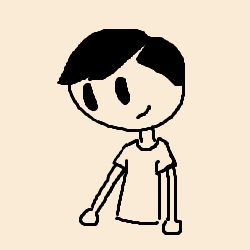

My name is Vince Reyes. I was born and raised in San Diego, US, which is a city that I have still only explored a little. I attended Sage Oak Charter School throughout elementary school, middle school, and high school. Currently, it is my first year of being a student at San Diego Mesa College, and I am majoring in engineering!
I like to do a small variety of things. For example, drawing is a hobby I do. Sometimes I draw traditionally, and sometimes I draw digitally; as to what I draw, I usually draw landscapes. I also like to play the keyboard; my favorite composer is Bach, and sometimes I like to play his music. Finally, my other hobby is coding; sometimes I code stuff that is game-related.
Many of the things I like experiencing involves looking at nature. For example, one of the places I like to go to is called Chollas Park, which has a lake, ducks, and very tall eucalyptus trees that are humbling to look at. Another thing I like to experience is looking at the sunrise. These things are simple, but I don't always experience them, and that's part of what makes them special.
During my last web development class, I learned a lot about accessibility, responsiveness, and common practices in making a website. These are especially things that I might not have been principled in by my own research. I simply hope to learn more about these aspects and reinforce myself even further.
Here is a list of languages that I know:
Thank you for visiting my webpage!